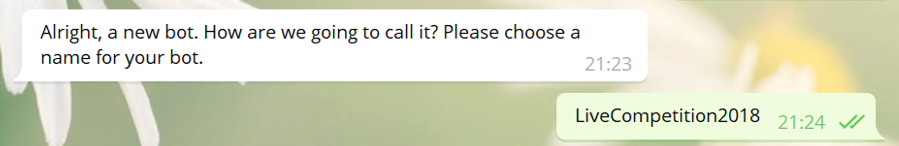
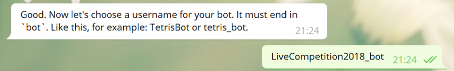
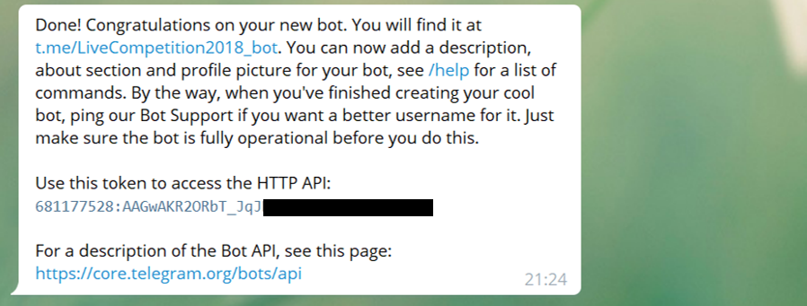
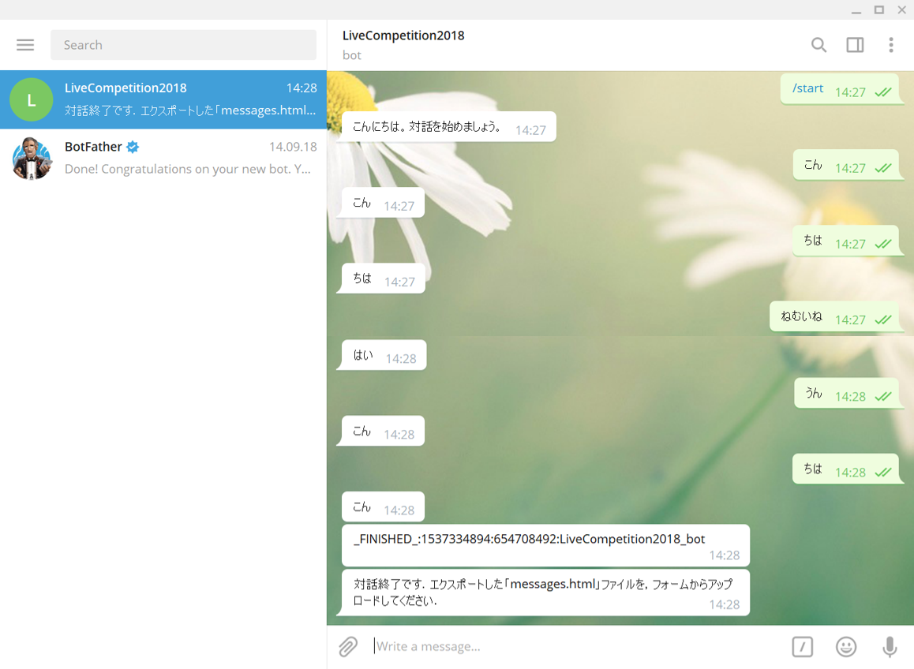

Getting Started
- 本コンペの参加者は，インスタントメッセージシステムTelegramで動作するボットを作成していただきます．
- Telegram は，Python，Java，Rubyなど，様々な言語のボット作成用ライブラリがGitHubで公開されており，これらを使って開発いただけます．
- 基本的には，お手持ちの対話システムの入出力をTelegram 対応にしていただければOKですが，システム仕様（オープン/シチュエーショントラックそれぞれのページを参照）に記載されている要件を満たす必要があります．
本ページは，オープントラック・シチュエーショントラック共通です．
ボット作成について
- 1. Telegramでユーザ名 @BotFather を検索し，+Joinでフレンドに追加
- 2. @BotFatherに /newbot と送信

- 3. BotFatherの「How are we going to call it? Please choose a name for your bot.」に対して，ボット名を入力
- ※任意の文字列が使用できますが，本コンペで使用するボットは，半角英数字のみ使用してください． 
- 4. BotFatherの「Now let's choose a username for your bot. It must end in `bot`. Like this, for example: TetrisBot or tetris_bot.」に対して，ボットのusernameを入力
- ※半角英数字のみ使用可で，最後は'bot'で終わる名前にする．（例：TetrisBot や tetris_bot）
- ※エントリフォームに入力した「Telegram ボットのusername」と同じにする．
- ※他に同じusernameのボットがある場合は登録できない． 
- 5. アクセストークンが発行される．プログラム上でこのアクセストークンを指定する必要がある．
- ※同一の tokenを用いて複数の対話サーバを起動した場合，正しく動かなくなりますのでご注意ください． 
Telegramボットの登録方法
- pythonライブラリを使用したボットの実装例（samplebot9.py）で，現在の対話のログからランダムに選択された発話を返すボットです．
- このボットはシステム仕様の要件を満たしていますので，reply関数を書き換えていただくと，独自のボットが作成できます．
- ▼samplebot9.py
ボットの実装例
#!/usr/bin/env python
# -*- coding: utf-8 -*-
from telegram.ext import Updater, CommandHandler, MessageHandler, Filters
import time
import random
# アクセストークン
TOKEN = ""
# 1対話の長さ(ユーザの発話回数)．ここは固定とする
DIALOGUE_LENGTH = 15
"""現在の対話のログからランダムに発話を選択し，送信するボット"""
# 対話履歴を受け取り，応答を返す．
# ここを各自書き換えれば自分のシステムができる
# このサンプルでは対話履歴の中からランダムで選択し，それを応答とする．
def reply(context):
return random.choice(context)
class SampleBot:
def __init__(self):
self.user_context = {}
def start(self, bot, update):
# 対話ログと発話回数を初期化
self.user_context[update.message.from_user.id] = {"context": [], "count": 0}
# システムからの最初の発話
# 以下の発話に限定しません．任意の発話を返してください
update.message.reply_text('こんにちは。対話を始めましょう。')
def message(self, bot, update):
if update.message.from_user.id not in self.user_context:
self.user_context[update.message.from_user.id] = {"context": [], "count": 0}
# ユーザ発話の回数を更新
self.user_context[update.message.from_user.id]["count"] += 1
# ユーザ発話をcontextに追加
self.user_context[update.message.from_user.id]["context"].append(update.message.text)
# replyメソッドによりcontextから発話を生成
send_message = reply(self.user_context[update.message.from_user.id]["context"])
# 送信する発話をcontextに追加
self.user_context[update.message.from_user.id]["context"].append(send_message)
# 発話を送信
update.message.reply_text(send_message)
if self.user_context[update.message.from_user.id]["count"] >= DIALOGUE_LENGTH:
# 対話IDは unixtime:user_id:bot_username
unique_id = str(int(time.mktime(update.message["date"].timetuple()))) + u":" + str(update.message.from_user.id) + u":" + bot.username
update.message.reply_text(u"_FINISHED_:" + unique_id)
update.message.reply_text(u"対話終了です．エクスポートした「messages.html」ファイルを，フォームからアップロードしてください．")
def run(self):
updater = Updater(TOKEN)
dp = updater.dispatcher
dp.add_handler(CommandHandler("start", self.start))
dp.add_handler(MessageHandler(Filters.text, self.message))
updater.start_polling()
updater.idle()
if __name__ == '__main__':
mybot = SampleBot()
mybot.run()
- 1. pythonライブラリをインストールする．
$ pip install python-telegram-bot --upgrade - 2. 9行目のTOKENを，Telegramボット登録で発行されたアクセストークンに変更する．
- 3.
$ python samplebot9.pyで起動
※同一の tokenを用いて複数の対話サーバを起動した場合，正しく動かなくなりますのでご注意ください． - 4. Telegramボット上で対話を行う．
samplebot9.py の使用方法
